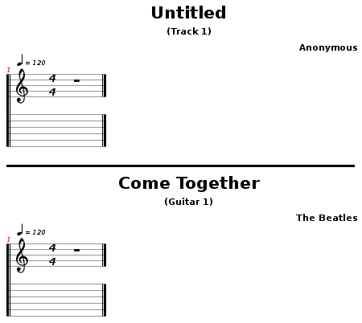

By default, you will notice quite a few toolbars lining the top of the screen, giving you one-click access to some of the most used options in TuxGuitar. While they can be a bit intimidating as a whole, they are actually quite simple when you break them down, and can save you a lot of time with some of the more common tasks associated with tablature editing. So let’s take a quick look at each of the toolbars. Pre-assigned keyboard shortcuts will be noted in parenthesis, but keep in mind: pre-assigned shortcuts can be re-assigned according to your own preferences, and most unanassigned options can be assigned via Settings > Configure Key Bindings.
*A side note on the toolbars–not only can you select which toolbars are visible by going to Settings > Configure TuxGuitar > Tool Bars, you can also change the order of them to better fit your own needs by clicking and dragging on the “handle” on the left side of each individual toolbar.
One last thing before we begin: prior knowledge of music theory is assumed on this page. There are a couple of links in the “Note Duration” section which can help you if you don’t know much theory yet, but to cover the actual “musical meaning” of all of these options would require an entire manual unto itself. This page will only explain the TuxGuitar-related functionality of the toolbars in an effort to avoid any long-winded music theory discussions.
You have seen and used this menu a million times, so we will not spend too much time on it. Basically, the file menu toolbar gives you the following options:
Nothing too complex here, so let’s move right along.
(These options and more can be accessed via the “File” pulldown menu at the top of the screen.)

Another very common set of options that pretty much explain themselves. The icon on the left will undo your last action (Ctrl + Z), and the icon on the right will redo what you have undone (Ctrl + Y).
(These options and more can be accessed via the “Edit” pulldown menu at the top of the screen.)

Now we’re getting a little more interesting. This menu lays down some options for those who prefer to edit via the score staff instead of using tablature. Keep in mind that these settings only affect the score staff (the upper set of lines with standard musical notation on them). If you only edit via the tablature staff, you can pretty ignore these settings, because they will not make any difference in your work flow.
(If your score staff is not visible, scroll down on this page and see the “Layout” menu.)
Clicking on the first icon with the wrench on it will put you in Selection Mode. With this mode selected, you can click your mouse anywhere in the score staff, and it will simply move your playback cursor to that location, without making any changes to the score itself. Good for quickly moving around in your score without worrying about accidently altering notes.
Clicking on the middle icon with the pencil on it will put you into Score Edition Mode. With this mode selected, you can enter notes into the score staff simply by clicking where you want the note to go. You can insert notes into lines or spaces, and they will take on the duration you currently have selected in the note duration toolbar (detailed below). One note: this option alone will only insert natural-pitched notes (i.e. no flats or sharps). If you want to insert sharps/flats or change pre-existing notes to sharps/flats, you will need to enter Sharp/Flat Mode.
Clicking on the icon with the sharp/flat symbol on it will take you into Sharp/Flat Mode. As stated above, Sharp/Flat Mode is simply a sub-option of Score Edition Mode. You have to use Sharp/Flat Mode if you want to enter sharp or flat notes or change pre-existing notes to sharp or flat.
(These options and more can be accessed via the “Edit” pulldown menu at the top of the screen.)
While the Properties toolbar only really has one icon, it is of particular importance if you plan on printing or exporting your tabs at any point. Clicking on this icon will bring up your song properties tab, wherein you can set the following options:
The reason these settings are of such importance is that whatever you type in the Name and Author boxes will show up on the first page of your tabs when you print or export them, and if you leave them blank, you will simply get a big, fat “Untitled” by “Anonymous” instead. So make sure you set them if you plan viewing these tabs outside of TuxGuitar! The difference can be seen below.

(These options and more can be accessed via the “Composition” pulldown menu at the top of the screen.)

There comes a point in almost any song when one guitar is not enough. When you are ready to start entering tabs for another instrument, simply click the icon with the “+” sign on it to add a new track.
If you decide you don’t need a track, click on the icon with the “-” sign to remove it. The remove track button will remove the track that is currently selected (currently selected track will be highlighted gray in the track list at the bottom of the screen).
(These options and more (including a handy “Clone Track” option) can be accessed via the “Track” pulldown menu at the top of the screen.)

This is another fairly straight-forward toolbar. The first seven icons simply change the note(s) at the current cursor position to whatever you select, ranging from whole-note to sixty-forth-note. This comes in handy if you need to make a change that is more than one note increment (i.e. quarter-note to sixteenth-note). You can alternately use the +/- keys on a standard numeric keypad to move one increment at a time.
*A side note on the +/- keys: as of version .9, most laptop keyboards do not support the use of the =/+ key to decrease note duration. The developers are aware of this bug, and are working it out. The “-” key on laptop keyboards should work, just not the =/+ key.
The last three icons will change a note’s value to dotted, double-dotted, and a wide variety of “division type” values.
If you do not understand the difference between the various note durations, you may want to research it a bit before you begin editing tabs, as you may find yourself quickly getting lost. Any basic music theory guide should cover these topics. A good starting place (as always) is the wikipedia’s pages on music theory and music notation:
(These options and more can be accessed via the “Note” pulldown menu at the top of the screen.)

This menu provides you with two more options concerning note editing.
Clicking on the first icon will “tie” the currently selected note to the one before it. This feature basically takes the value of two notes and combines them into one. The most common use for this feature is when you have a note that begins in one measure and ends in the next. Tying notes is really just a way of keeping the score clean and organized. If you need more information, you may want to research musical notation via the links above.
Clicking on the second icon with the “A7” will bring up the chord editor. The chord editor is a handy time-saving tool used to search, build, and insert chord formations into your tablature. While the chord editor does deserve further exploration, it is a topic best left for another page and another day.
(These options and more can be accessed via the “Note” pulldown menu at the top of the screen.)

The Composition toolbar gives you a few options for setting the structure and meter of your song. Again, for a deeper explanation of what each of these means and how to fully utilize them, refer to the music theory links under the “Note Duration” section.
Clicking on the first icon with the question mark will allow you to set the tempo of your song. New songs in TuxGuitar default to 100 beats/min, but you can set your own tempo to anything between 30-320 beats/min. TuxGuitar also supports tempo changes throughout the song, and creating them is as easy as placing your playback cursor in the measure at which you want the tempo to change, and clicking on the icon. Any tempo set in the first measure of the song will be the default tempo either throughout the song, or until you set another tempo in any of the following measures.
Clicking on the next icon with the 4/4 graphic will bring up the time signature dialog, which is pretty straight-forward. You have a seperate pulldown menu for each half of the time signature, as well as a “To the end” check box. TuxGuitar supports multiple time signature changes throughout the song, and much like tempo changes, are as easy to create as clicking the icon and setting a new time signature in the measure where you wish it to change. Checking the “To the end” box will cause your newly-selected time signature to continue either to the end of the song, or until you manually change the time signature in any of the following measures. Unchecking the “To the end” box will cause the new time signature to span only the measure you add it to, after which it will automatically reset to the time signature used by the previous measure.
(These options and more can be accessed via the “Composition” pulldown menu at the top of the screen.)
Next three icons are used for repeating control. Everyone familiar with music notation should be familiar with these - you can open and close repeating section. When closing, you will get a dialog to specify how many repeatings will occur. The last icon is used to mark alternative endings in the repeat. A special dialog will also occur, allowing you to choose in which cycle this ending will be played.

These are song playback controls. Buttons are for play/pause, stop playing, previous measure, next measure, beginning of the song and end of the track.

It is very useful to add a marker in a song, to mark some part of the song (verse, chorus, solo, etc.)
Marker controls on the toolbar allow you to create a marker, list the markers and navigate them (previous, next, first, last).

There are several layout types in TuxGuitar. They all change the view of tablature and scores in the main editor window.
The first button on the left is Page layout. It’s alternative is the second button: Linear layout. Page layout displays the tablature and scores like on the paper sheets, with the line breaks. On the other side, linear view views the instrument in a single line, expanding to the right.
The third button enables Multitrack view. When enabled, all the tracks will be displayed in the main window. Depending on your previous choice (Page or Linear layout) you will see different view. In personal experience, good combinations are Linear+Multitrack, and Page layout without multitrack (for single instrument view).
The fourth button is Show scores button. It simply views the scores (notation) above your tab line.
The fifth button is Compact view. You would like to enable it when you consider your view too wide.

These three buttons show you various windows.
The first button shows you the fretboard on the bottom of the main window. Fretboard is usefull to view the exact spots where you should put your fingers in each moment. You can even click on the fretboard to edit your tab. Fretboard view is available for both right- and left-handed guitars.
Second button shows Mixer. Mixer dialog is very important - there you can change the volume of instruments in your tab, mute/solo single instrument, change panning and assign MIDI channel. Read more about Mixer dialog.
The last button shows you player controller window, where you can control the song playback.

These effects are applied with editing cursor positioned on existing note in the tab. Selected effect is then applied to note.
Read more about note effects.

By selecting different icon than the current, you change the dynamics of the note you are editing. They gradually scale from Piano Pianissimo which is the most silent, to the Forte Fortissimo which is loudest.